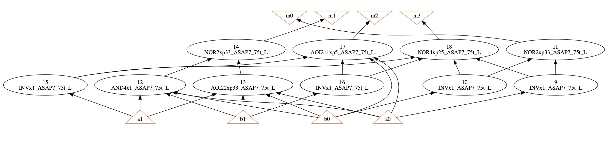

Verilog-to-PyG - Toy Example 2
Author: Cunxi Yu
2-bit Multiplier technology mapped netlist representation
This is an example of processing 2-bit Multiplier in
technology mapped netlist representation for intefacing PyG.
Step 1: Process in ABC
./abc
abc 01> read 7nm_lvt_ff.lib
Library "ASAP7_7nm_LVT_FF" from "7nm_lvt_ff.lib" has 159 cells (26 skipped: 23 seq; 0 tri-state; 3 no func; 0 dont_use). Time = 0.70 sec
Warning: Detected 2 multi-output gates (for example, "FAx1_ASAP7_75t_L").
abc 01> read -m mult-2b-mapped.v
abc 02> write_edgelist mult-2b-mapped.el
WriteEdgelist (Verilog-to-PyG @ https://github.com/ycunxi/Verilog-to-PyG) starts writing to mult-2b-mapped.el.
abc 04> write_edgelist -h
usage: write_edgelist [-N] <file>
writes the network into edgelist file
part of Verilog-2-PyG (PyTorch Geometric). more details https://github.com/ycunxi/Verilog-to-PyG
-N : toggle keeping original naming of the netlist in edgelist (default=False)
-h : print the help massage
file : the name of the file to write (extension .el)
Step 2: Check edgelist file written (mult-2b.el)
# Benchmark Edgelist Dumping (beta) "Multi2" written by ABC on Sun Apr 23 19:06:42 2023 (more at https://github.com/ycunxi/Verilog-to-PyG)
9 27 INVx1_ASAP7_75t_L
11 28 INVx1_ASAP7_75t_L
27 28 23 NOR2xp33_ASAP7_75t_L
11 9 10 12 29 AND4x1_ASAP7_75t_L
9 12 10 11 30 AOI22xp33_ASAP7_75t_L
30 29 24 NOR2xp33_ASAP7_75t_L
10 31 INVx1_ASAP7_75t_L
12 32 INVx1_ASAP7_75t_L
11 9 31 32 25 AOI211xp5_ASAP7_75t_L
31 27 32 28 26 NOR4xp25_ASAP7_75t_L